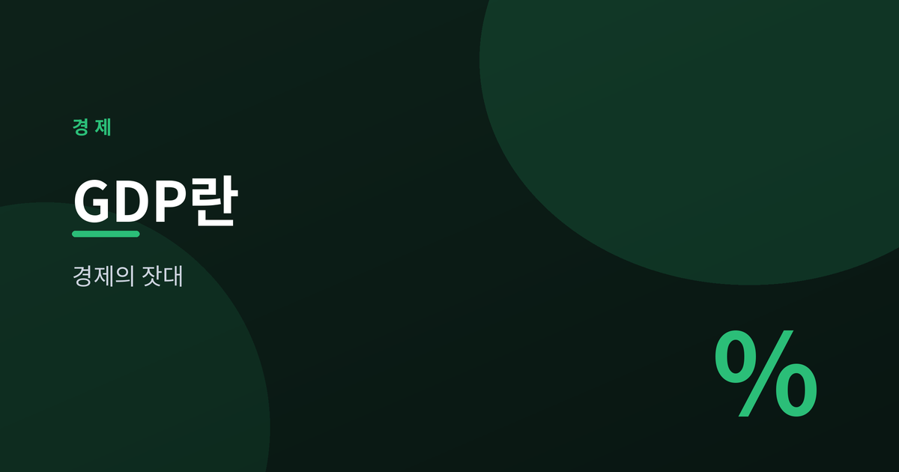
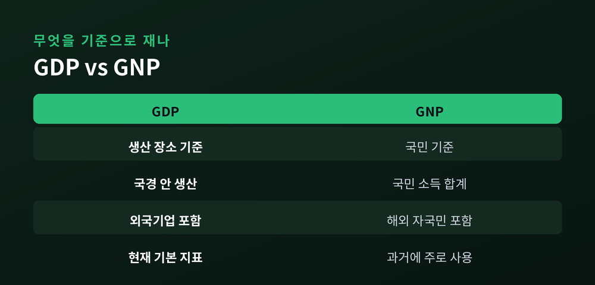
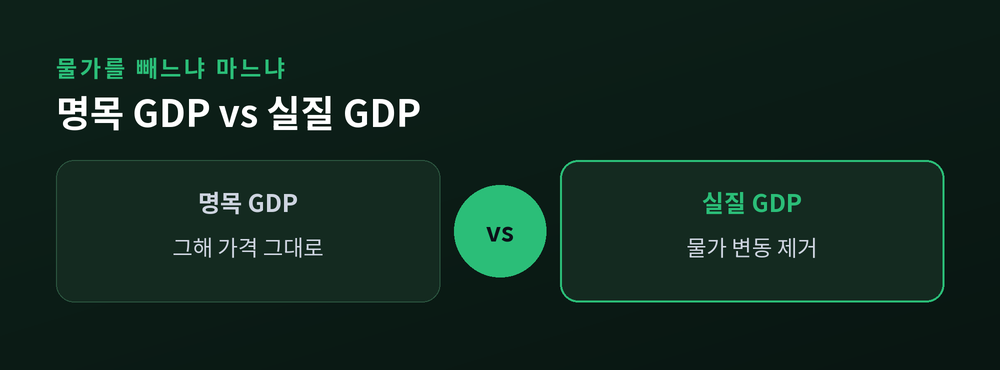
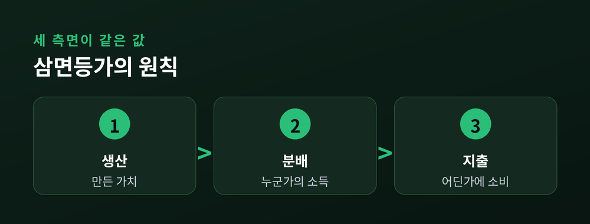
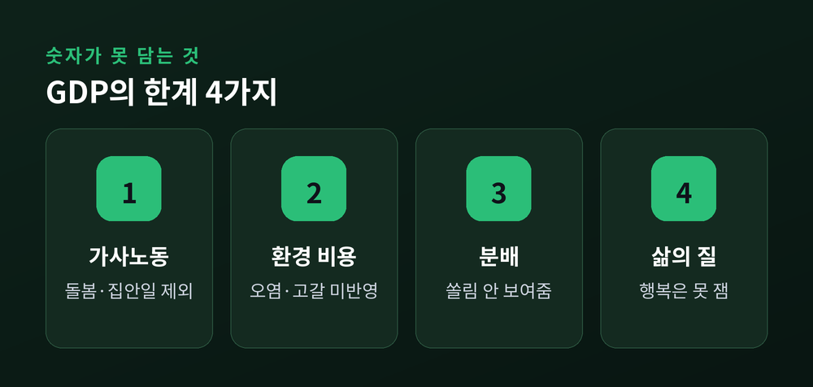

한 나라 경제를 재는 잣대

경제 뉴스를 보면 GDP라는 말이 빠지지 않습니다.
한 나라 경제의 크기를 재는 대표 지표이기 때문입니다.
이번 글에서는 GDP가 정확히 무엇을 뜻하는지, 무엇을 담고 무엇을 놓치는지 개념 위주로 정리해 보겠습니다.
GDP는 국내총생산(Gross Domestic Product)입니다.
일정 기간 한 나라 안에서 생산된 최종 재화와 서비스의 시장가치 총합을 뜻합니다.
이 정의에는 몇 가지 조건이 숨어 있습니다.
'일정 기간'은 보통 한 해 또는 한 분기를 가리킵니다.
'최종'이라는 말은 중간에 쓰인 원재료나 부품은 빼고, 완성된 물건과 서비스만 센다는 의미입니다.
빵값에 이미 밀가루값이 들어 있으니, 밀가루를 따로 더하면 이중 계산이 되는 셈입니다.
'시장가치'는 서로 다른 물건을 가격이라는 하나의 잣대로 묶어 더한다는 뜻입니다.
GDP에서 가장 자주 오해받는 부분이 '국내'입니다.
국내란 국적이 아니라 생산이 이뤄진 장소를 기준으로 삼습니다.

외국 기업이 우리 땅에서 만든 생산물은 GDP에 들어갑니다.
반대로 우리 기업이 해외 공장에서 만든 생산물은 그 나라의 GDP로 잡힙니다.
이와 대비되는 개념이 GNP, 즉 국민총생산입니다.
GNP는 장소가 아니라 국민을 기준으로, 어디에 있든 그 나라 국민이 벌어들인 소득을 더합니다.
예전엔 GNP를 주로 썼습니다. 지금은 국경 안의 경제 활동을 재는 GDP가 기본 지표로 자리 잡았습니다.

같은 GDP라도 두 얼굴이 있습니다.
명목 GDP는 그해의 가격을 그대로 곱해 구합니다.
그래서 생산량이 그대로여도 물가가 오르면 명목 GDP는 커집니다.
숫자가 늘었다고 살림이 나아졌다고 보기 어려운 이유입니다.
실질 GDP는 기준이 되는 해의 가격을 적용해 물가 변동을 걷어냅니다.
순수하게 생산량이 얼마나 늘었는지를 보여주는 값입니다.
경제가 실제로 성장했는지 따질 때는 실질 GDP를 봅니다.

GDP는 세 방향에서 측정할 수 있습니다.
무엇을 만들었는지 보는 생산 측면.
그 대가가 누구에게 돌아갔는지 보는 분배 측면.
그 돈이 어디에 쓰였는지 보는 지출 측면.
놀라운 점은 이 셋의 크기가 이론상 같다는 것입니다.
누군가 만든 가치는 곧 누군가의 소득이 되고, 그 소득은 어딘가에 지출되기 때문입니다.
이를 삼면등가의 원칙이라 부릅니다.
지출 측면은 흔히 이렇게 나눕니다.
소비(C), 투자(I), 정부지출(G), 그리고 수출에서 수입을 뺀 순수출(X−M)입니다.
네 항목을 더한 값이 지출로 본 GDP가 됩니다.
GDP 총량만으로는 국민 개개인의 형편을 알기 어렵습니다.
그래서 GDP를 인구로 나눈 1인당 GDP를 함께 봅니다.
나라 전체가 커도 인구가 많으면 1인당 값은 작아질 수 있습니다.
경제성장률은 실질 GDP가 지난 기간에 견줘 얼마나 늘었는지를 백분율로 나타낸 값입니다.
성장률이 높다는 것은 그만큼 생산이 활발해졌다는 신호입니다.
경제가 커지는 속도를 재는 잣대라고 이해하시면 됩니다.
GDP는 편리하지만 완벽하지는 않습니다.

집에서 하는 가사노동이나 돌봄은 시장에서 거래되지 않아 GDP에 잡히지 않습니다.
생산 과정에서 생긴 환경오염이나 자원 고갈의 비용도 반영되지 않습니다.
소득이 한쪽에 쏠려 있어도 총량만 보여줄 뿐, 분배가 고른지는 말해주지 않습니다.
무엇보다 GDP는 생산의 양을 잴 뿐, 사람들의 삶의 질이나 행복까지 담아내지는 못합니다.
끝으로 한 마디만 더 드리겠습니다.
GDP는 한 나라 경제의 키를 재는 자와 같습니다.
"키를 안다고 그 사람의 삶 전부를 아는 것은 아니다" — 숫자 뒤의 여백을 함께 볼 때 GDP는 비로소 제 몫을 합니다.